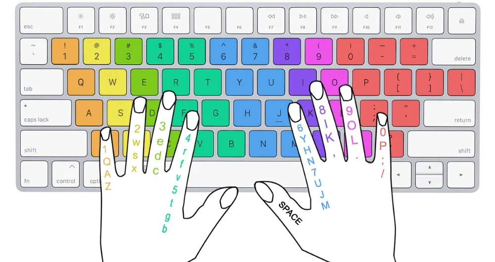
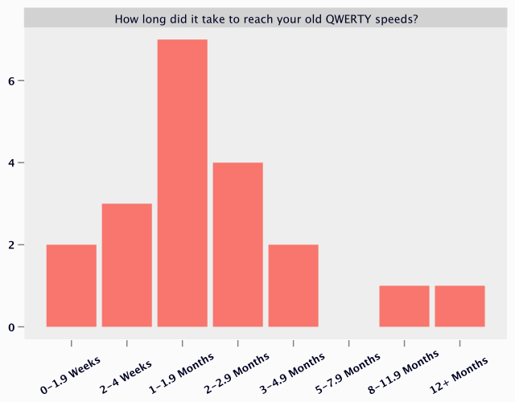
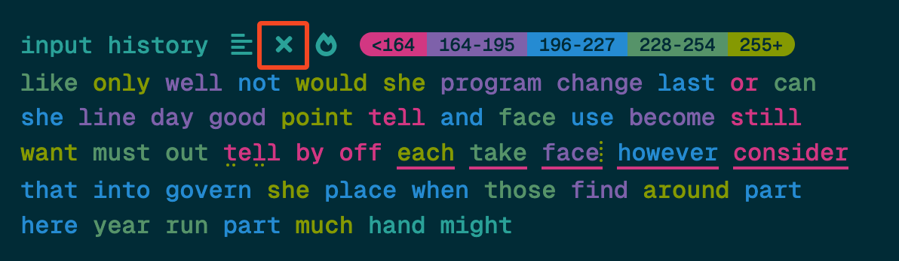
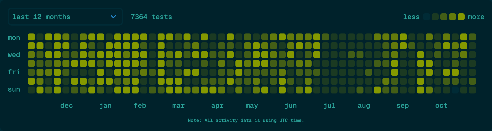

Zak’s Typing Guide
Welcome to my typing guide!
This guide will teach you:
- Correct typing technique to set you up for a higher potential speed, comfort, and efficiency.
- How to evaluate if you will benefit from the increased efficiency of investing in a modern layout.
- How to build a foundational typing speed so that you can comfortably and quickly type out a variety of texts.
- How to break into the intermediate typing stage and beyond!
- What you can expect your progression to look like.
- How you can avoid common pitfalls.
Please see the sidebar or the button at the top for a table of contents.
Who Am I?
I picked up typing at a young age, when I first got into programming. I recall scoring around 60 words per minute (wpm) at age 10, typing faster than my classmates and even my teacher. Over the years I continued to dabble in typing, but never taking it seriously until I eventually picked up an alternate keyboard layout in 2024. Since, I have amassed over a hundred hours of typing practise, and achieved scores which place me in the top 0.22% of typists, ranked about 1000th on Monkeytype at the time of writing. I have achieved a score of over 200 words per minute on a 15 second test, and a score of over 170 words per minute on a 60 second test. I have been actively observing typing habits of successful and still developing typists and analysed patterns which affect outcomes, which I hope to share to you.
Foundations
It is generally a good idea to have decent typing form, even if it means a minor (perhaps major) setback in your current typing ability. High speeds are achievable with less than ideal technique, although they have been achieved in spite of the technique, not because of it; You could even argue they would be faster if they had learnt better technique.
This is what I believe constitutes most of good typing technique, on a basic level:
- Using at least 6 fingers, and an additional thumb.
- Looking only at the screen when you type.
- Using a thumb for the space.
- Not resting your wrists when typing.
The overarching reasons for these is that it increases your typing efficiency. There will be less finger and head movement, meaning that your finger and eye speed will be less of a limiting factor concerning your typing speed.
Why You Should Learn an Alternative Layout
In order to make QWERTY feasible as a layout for challenging speeds, virtually all typists need to employ complex alt-fingering techniques. Alt-fingering is when a typist uses a finger for a key which deviates from the standard home row typing technique commonly taught in schools.

When using the standard home row technique we get many uncomfortable words such as:
- Followed
- Decided
- Much
- Crazy
These are uncomfortable because they involve slow, consecutive finger usage (known as a same finger bigram, or SFB), scissors like cr, and plenty of hand movement with general typing. These issues are exacerbated when typing at high speeds too. Many of these problems can be solved through in-depth planning with alt-fingering; However, this takes time and deliberation, and in many cases is not as comfortable as it would be otherwise with no alt-fingering.
One massive advantage of using an alternate keyboard layout is that you get all the benefits from complicated alt-fingering, without any of the mental effort required to plan this out and personalise it. It is much simpler to advise a general population to learn a modern alt layout than it is to advise to work through common words and testing if each word is comfortable, to evaluate the necessity of an alt layout. Also a word may become uncomfortable down the line after speed has been gained.
Additionally, I believe that using a modern layout will make you a faster typist. Admittedly we have no studies or formalised trials on this, and this is just my personal opinion. The reason I believe a modern layout will improve your speed is because it is obvious that worse layouts exist. This implies that some layouts are better than others. Modern layouts have far less same finger usage, awkward scissors and patterns, and far more rolls (try out the word power on your QWERTY keyboard!). I do not believe I could have reached my current speed, in the time that I did, on QWERTY, due to the discrepancy in rolls and same finger usage.
Since so many people learnt to type at a young age, or without guidance, you might find yourself possessing numerous bad keyboard habits. Learning an alt layout is the perfect opportunity to reset your bad habits and restart with ideal fundamentals. If you are using an ergonomic keyboard, this is also another ideal time to start learning. This is because alt-fingering is more difficult on an ergonomic keyboard due to the rows of keys not having a stagger.
Will It Take Me Another 20 Years to Build up My Speed?
A common misconception! Just because you spent 10 years on one layout, it does not mean it will take another 10 years of practise to return to your QWERTY level. From my observations, it takes roughly 3 months to return to your old speed. This is because much of your skill can transfer over, namely your finger speed and coordination. The same logic applies to the scenarios in which a musician has an easier time picking up a second instrument, or an athlete picking up a new sport.

*“How long did it take to reach your old QWERTY speeds?” A survey was undertaken in the AKL Discord server. Speed of respondents ranged from ~40-200 wpm. There were 18 respondents.*
Dedicated practise will always win over mindless usage (more to come on this later!) - another reason why it will not take an exorbitant amount of time to return to old speeds. In many cases, the habit of dedicated practise will be formed out of necessity due to an absence of ability on the new layout, leading to speeds greater than what was achieved on QWERTY. Additionally, you will only need about 10-30 minutes of daily practise to build your speed back up. This can easily be done whilst still using QWERTY day-to-day. Do not worry about your QWERTY speeds falling after learning an alt-layout, this will not happen, especially if you do occasional practise on QWERTY.
What About Keyboard Shortcuts?
As for keyboard shortcuts, you have two simple options. You can either keep the QWERTY shortcuts (i.e. a QWERTY layer when holding down the modifier keys) or you can just adapt to the new shortcut locations. I have tried both and I personally prefer using the new positions for my shortcuts.
Which Layout Should I Learn?
You should learn a modern layout, as layouts like Dvorak were made almost a century ago, long before computer analysis. Even layouts like Colemak have been improved upon significantly.
To keep things simple, I would recommend learning Sturdy, the layout I am currently using, because it is particularly high in rolls, resulting in an increased number of words which you can burst through. It also features a low amount of redirects, which are sequences such as dfa or dsf, these sequences involve reversing the direction which you are rolling and are more inaccurate based on my and others’ experience.
If you wish to spend more time evaluating which layout to learn, I would recommend looking into:
Or reading this article for choosing an alternative layout. Additionally, you can also join the AKL Discord!
To install a layout, please see the layouts wiki guide.
When Should You Not Learn an Alternative Layout
Whilst learning a modern layout can be a worthwhile investment for many, there are certainly people who will not benefit as much. If you find yourself in one of the following scenarios, you should consider staying on QWERTY:
- You do not own your hardware and cannot administer the software: for instance if you use a school or work laptop where you do not have permission to change the software.
- You do not have the necessary time required to consistently practise the new layout. Expect to spend 15-30 hours to return to higher speeds, over the course of a month or so.
- You do not have any typing ambitions beyond the beginner stage.
Additionally, it is probably a good idea to have a base level of QWERTY ability as it is likely you will use a QWERTY keyboard at some point.
Advice for Remaining on QWERTY
If you have decided to remain on QWERTY, you should look into alt-fingering. I would suggest asking around in the Monkeytype Discord Server, and going through the most common words to test out if a particular word feels difficult or slow to type with the homerow method. Then use this personalised feedback to find an ideal alt-fingering sequence for you.
Practice for the Beginner
As a rough guideline I would consider a typist a beginner if they cannot achieve the following speeds:
- 110 wpm on a standard 60s test on Monkeytype.
- 80 wpm on a 60s Monkeytype test with the English 10k language option.
If you have not achieved these speeds then this section aims to teach you what is necessary. I believe that anyone with healthy hands and some spare time can achieve these speeds.
Memorising Your Layout
This section assumes that you cannot touch type (i.e. type without looking at your keyboard) on the layout that you are using.
The fastest way to learn your layout will be to throw yourself into the deep end and just start typing on it! It is possible to gradually introduce new keys to yourself through Keybr and Monkeytype, however, it will be faster to learn the keys at the same time due to diminishing returns slowing down the ‘mastery’ of a key. You should not be looking at any sort of keymap or keyboard, whether that’s on screen or physically when you are memorising your layout. The idea is that you want it to be costly for your brain to forget a key, which strongly encourages it to remember each key. Do not be discouraged when you make mistakes; a high level of accuracy is not realistic at this stage of learning. You can look at the layout every now and then, or try pressing around, or using mnemonics if you get stuck. Expect it to take anywhere from 20 minutes to two days to memorise your layout completely.
Switching Full Time
I would not recommend switching layouts full time until you have a speed of about 40 wpm. Switching full time’s main benefit is that you will have more experience in the words and punctuation that you specifically use and rely on the most. Due to the effects of diminishing returns and non-deliberate practise you may not experience the results you were hoping for when switching full time. Nonetheless there are certainly advantages and I do recommend switching full time when you are at an appropriate speed.
The Beginner Method
In the beginner stages, a lack of muscle memory is usually the culprit for a lack of speed. To develop this muscle memory I recommend:
- You set a goal of accurately typing out a larger wordlist, with the punctuation setting enabled. Switch the language setting on Monkeytype to English 10k, this will contain the top 10 thousand words in English. This will be a diverse set of words and you may even encounter words which you have never typed before.
- You should also turn on the punctuation setting to get a feel for where all the punctuation keys are on your layout. I no longer practise with punctuation, however, I benefited greatly from starting out with it.
- The length of the test is up to you, starting with 25 or 50 words is a good idea, as a timed test may cut you off when you are in the middle of a word.
Occasionally I would advise mixing in some default English (called e200) at a duration of 60s or quotes to work on higher speeds and common words.
The amount of time spent in the beginner stage can vary between people. Personally I spent around 40 hours, over the course of three months to achieve 100 wpm on English 10k and 120s on 60s, whilst others can do it in under 25 hours.
I suggest moving to the intermediate section of this guide when you have reached the speeds as stated, or have plateaued for months despite continuous practise.
Correcting Errors
In my opinion you should not correct your errors for optimal practise. This is because you run the risk of adding the backspace into your muscle memory; something I have experienced a few times. A better solution would be to either skip over the word completely in the case of an error, or use control+backspace (option+backspace on macOS) to delete the entire word and retype it. Additionally, there is an option in Monkeytype to practise all the words which were typed with errors.

I do not want to overstate the importance of correcting all your errors however, as many errors will be accidental and not stemming from a larger issue. I advise experimenting with this option if you are interested.
Practice for Intermediates and Beyond
Roughly there are four distinct skills in typing:
- Raw finger speed and coordination: The ability to coordinate and move your fingers fast.
- Endurance: The ability to maintain a relatively high speed for extended periods.
- Flow: The ability to type with low variance of speeds between words.
- Range: A familiarity with a wide range of words and letter combinations.
It is commonly the case that one or more of these skills may be the bottleneck for typing improvement, and thus it is wise to cycle through different tests which target the aforementioned skills.
Developing Finger Speed and Coordination
This is likely the most important skill beyond the beginner stage for improvement. This will be the foundation for your improvement. How did I come to this conclusion?
When a typist picks up a new alt layout, it is observed that they will quickly return to their old speeds before slowing down in their rate of progress. The only key variable that remained the same was that they kept the same level of finger speed and coordination.
Additionally from observations of myself and other typists, I have seen a correlation between finger speed and typing ability. There is significant overlap with typists who also play an instrument, or play rhythm games such as Osu!. You may think that your finger speed is not your limiting factor, however, even typing at lower speeds becomes far easier once your maximum speed has been raised.
For some, a high degree of finger speed and coordination is genetic, or has been developed without realising, leading to some understating the importance of this skill, or claiming that it is something that should occur naturally. This is certainly true for some, but misleading for the majority of typists.
I believe if you are stuck in your improvement despite continued practise, this can be the key to unlocking a burst of improvement.
To train this skill the key is to push yourself enough such that you make mistakes and need to reset the test. Ideally this is paired with a simple wordlist like e200 and a short test of length 15s or less. Personally the vast majority of my practise has been with e200 15s and I have seen enormous benefit and carryover.
Developing Finger Speed with Quotes
Many have developed their finger speed and coordination through quotes, and if this option is appealing to you, then you should continue with it. However, there are some issues with this method in my opinion. If you are the type of person who enjoys speedrunning or having many attempts on the same quote, then you may find yourself particularly enjoying ghosting (repeating the same quote numerous times) a quote repeatedly. However, personally I find this to be very frustrating, much less than having a new set of words as would the case when typing on a e200 15s test. For this reason I do not use quotes to train my finger speed.
Developing Flow
This skill is vital for longer tests such as 60s or 120s, or when transcribing longer texts of which you know all the content you need to type. For example, if you are copying down spoken text, or copying from something written on paper. This skill, paired with a high finger speed, can make typing far more enjoyable and efficient.
This skill can be developed on tests that are at least 60 seconds long. A variety of language options can be chosen, for example, e200, e1k (English 1k), e10k, and long quotes are all good options and target a slightly different part of your flow.
When doing these tests I recommend resetting infrequently, and focusing on slowing down on sections with words which you are less confident in, and naturally speeding up on sections which contain easy words.
Problem Words
You may find that there are some words which you cannot type accurately, consistently. For such words I would recommend slowing down more when you encounter these such that you do not make a mistake, as a mistake often has more of a speed penalty than slowing down.
Developing Range
Developing range may not be necessary if you use the same layout in your everyday typing and depending on what you type out each day. However, it may still be worth practising for you. Conveniently there is a plethora of resources for this. If you wish to stick with Monkeytype, I would advise using larger dictionaries like English 1k, English 10k, even English 450k, or your favourite programming language. Also consider using the punctuation setting. If you wish to look outside of Monkeytype I recommend Entertrained, a site where you can type out books. For the goal of developing range, it may be more worthwhile repeating missed words. You should focus on typing these words out with high accuracy, and minimal resets.
Developing Endurance
This will not be as useful for everyday typing for many people, as every day typing is often done in shorter bursts between messages or between thoughts. Nonetheless, it can be a cool skill to develop. In my opinion a test with length 60s is the minimum amount of time needed to develop this, with 120s fitting better. Long quotes are another great option.
Setting a pace caret on Monkeytype may be a nice idea to target maintaining a certain speed for the duration of the test.
Putting it All Together
I recommend cycling through different tests to focus on a different skill. For example, I might spend a few weeks trying to get a certain record on a test like English 200, 60s or English 10k, zipf, 120s, or I might spend a few weeks specifically focusing on completing more quotes. I do recommend keeping some form of finger speed training in your program though, as this is a very foundational skill. Additionally, it is a skill which can fade quicker than the others.
By rotating through different tests you can be sure that you are probably not missing anything extremely important for your typing practise. There is also a mental aspect as you will be seeing improvement after possibly not seeing any for an extended period of time.
One idea of structuring your practise is to do so with objectives, for example choosing a single objective such as:
- Achieving 90% of your record, 3 times.
- Achieving 85% of your record, 10 times.
- Complete 10 tests.
- Complete 3 tests with above 99% accuracy.
This is not strictly necessary, however, for some it can be a nice way of thinking about your practise.
Consistency
For an optimal practise regimen you should type every day. Typing every day may not be applicable to everyone, but in general, spreading your typing practise out to more days is going to be better than having a few long typing sessions. Typing 10-30 minutes every day is going to be sufficient for results for a long time. If you wish to type more I would recommend spacing out your practise sessions throughout the day instead of typing continuously.

My activity on Monkeytype, my main practise site, over the last year.
A Case Against ‘Realistic Practise’
A common critique against different mode’s of practise like e200, or 15s is that it does not reflect realistic typing conditions. However, do not think that just because a test is realistic, it is the best way to improve realistic typing. To use an analogy, when an athlete is in the gym to improve for their sport, they are not necessarily doing movements which mimic what they do in their sport. Instead, they are going to practise the fundamental movements like a squat or deadlift. The same logic will apply with your typing practise.
If simulating realistic typing was all that mattered, you would see more people who do realistic typing for a living reach high speeds, but I have not observed many people who type for a living to be fast. Additionally, a few weeks of dedicated practise will have you reaching speeds surpassing people who only type when necessary.
What About Accuracy?
You might have noticed that I did not include accuracy as one of the distinct skills. This is because I believe inaccuracies come from trying to type at a speed of which you are not capable. Whilst this is important for your practise, you should slow down if you are typing with too many errors. You should also make sure to really focus on the typing to increase your accuracy.
You also may not be as inaccurate as you think, as your average accuracy statistic is incomplete. This is because most people will reset their tests more often than not, making your completion rate a more accurate measurement of your accuracy.
General Practice Advice
Which Keyboard Should I Buy?
Many people buy mechanical keyboards in hopes that it improves their typing ability or comfort, however, I think this sentiment is mostly misleading. You only need a keyboard that works, and ideally it is at least a 6 key rollover keyboard. Personally I prefer using laptop keyboards and membrane keyboards as they are easier to press than the average mechanical keyboard and the keycaps are much lower. You should only buy a mechanical keyboard if you are interested in the customisability or have a general interest in mechanical keyboards and do not have the expectation that it will make you a better typist.
You can also consider buying an ergonomic keyboard, however, be aware of all the marketing behind these. Traditional row staggered boards are a completely valid preference.
For what its worth, the world record was set on a MacBook keyboard which happens to be my preferred keyboard.
Dealing with Plateaus
Almost no matter which stage you are at, you can expect to encounter a plateau of some sort. In these times it is important to note that progress is not linear and that your practise is likely not wasted. Depending on the length of your plateau I would either keep practising in the same manner as you currently are, or change up the test you are doing. Changing the test will likely give you a bout of visible progress, keeping your spirits high.
Get Better Sleep!
A very underrated component of typing practise is the quality and amount of sleep per night. According to this study, increasing the sleep duration by 60-90 minutes, lead to an improvement in performance of musicians on their instruments.
These differences highlight sleep’s facilitative role in consolidating motor skills, cognitive function, and musical memory. Results highlight the substantial benefits of sleep extension for musicians’ performance and wellbeing.
Pelletier, B. D. (2024, May 26). Effects of additional sleep on musical skills: Insights from professional musicians and music majors. https://doi.org/10.17605/OSF.IO/RD8N3
It is a common experience amongst typists that typing quality improves upon after waking up from sleep. This experience will be most felt in the early and beginner stages of learning to type.
Warm Hands
Take a shower or do some exercise to warm up your hands for typing. Typing with cold hands is difficult.
Closing Remarks
Thanks for reading! I would appreciate any thoughts you have on the guide, site, or PDF! When you set new records feel free to tag me or link the guide, I would love to see the impact and your progress. You can ping me on Reddit (u/zak128) or on Discord (zak.7), I am most active in the alt layout server.
Referencing This Guide
Please feel free to link or quote the guide or any appropriate section where you see fit. You can copy the link of any heading if you want to link to that specific section.
Why This Guide Exists
I have been asked a few times why I would create this guide when others already exist. The answer is simple:
- Existing typing guides I have seen do not fully capture my opinions; Either they include overly dogmatic information which I do not agree with or lack information which I believe is important.
- I want a place to easily reference my opinions and thoughts without needing to recall all the details.